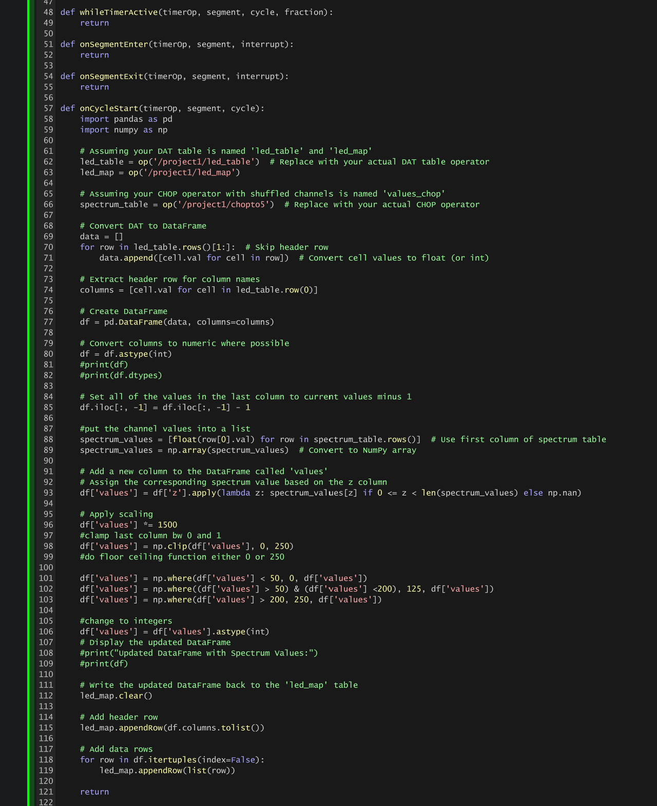
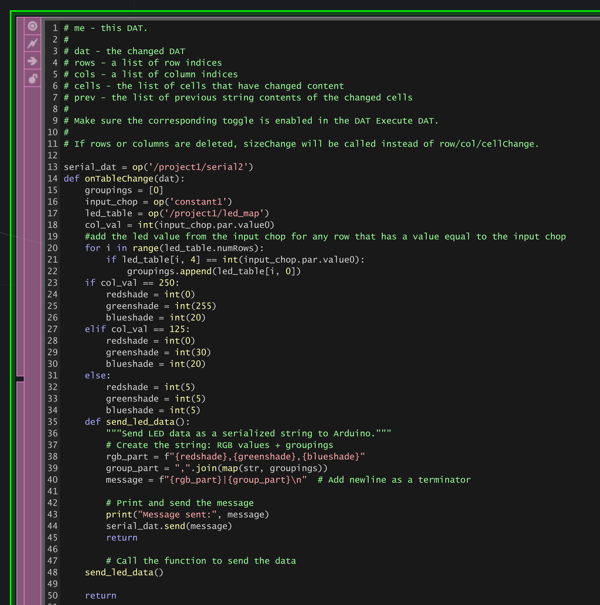

~final project!!! lights in 3d~
step 5: play!! (best part so it comes first)
step 1: inspo
led pixel array by ittybittyartist
step 2: physical construction
laser cut file of bottoms and sides used to construct pixel array housing
step 3: touchdesigner
audio analysis components... had to download new software "cable input and output" on computer to be able to link directly with spotify on my computer
(left) four components corresponding to the four different audio-visual light modes... programmed keyboard presses of "1" "2" "3" and "4" to switch the modes
(right) led mapping... notes each led's x, y, and z values within coordinate system of the pixel array
(left) timer comopnents to moderate how frequently the python code is running and sending data to the arduino serial port
(right) channel component that operates on each timer cycle to switch the values in the led mapping table
 
(top) code that modulates table values upon each timer cycle
(bottom) code that maps channels to r,g,b values and sends a serial message to the arduino serial port
step 4: arduino code


arduino code used to read in serial messages and convert to signals to send to the leds
step 6: reflect
what worked well:
- the construction looked pretty nice and was easier than expected
- i liked the rain mode
- i was able to map the audio spectrum to the lights pretty easily
- ability to switch between audio modes with keyboard presses
what didn't :(
- SO SLOW... the serial communication was NOT the move
- spent a lot of time trying to code around the limits of the serial communication (thats where the timers came in)
- was annoying to have to reupload arduino code to get the non-audio-visual modes to run
future improvements
- swap from arduino to esp32 for faster communication
- use wled software to increase speed and ease transfer bw touchdesigner and microcontroller